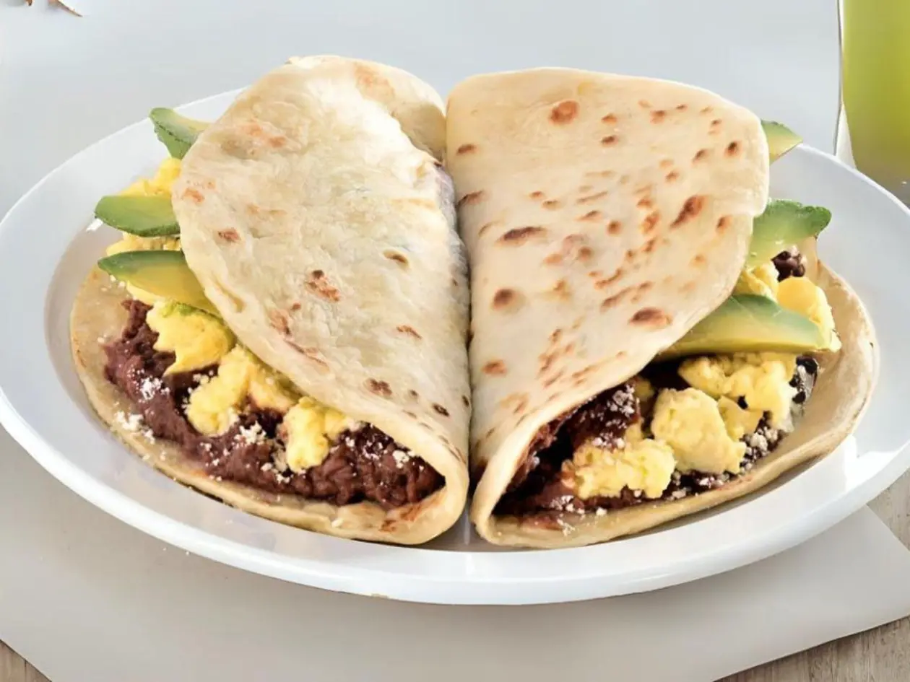
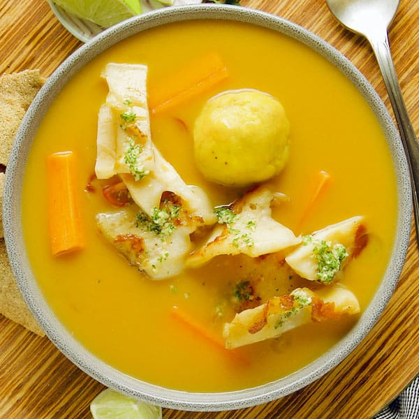
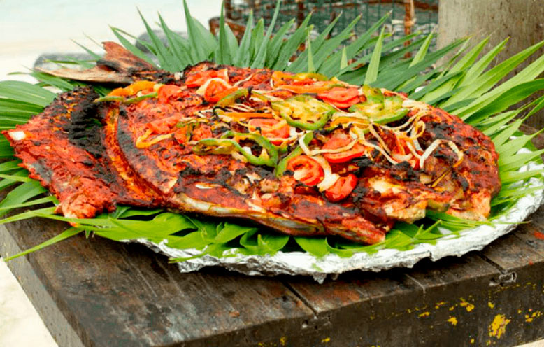
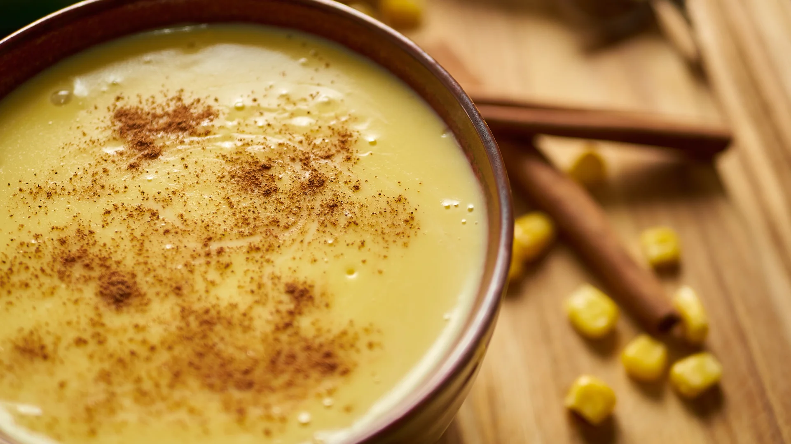
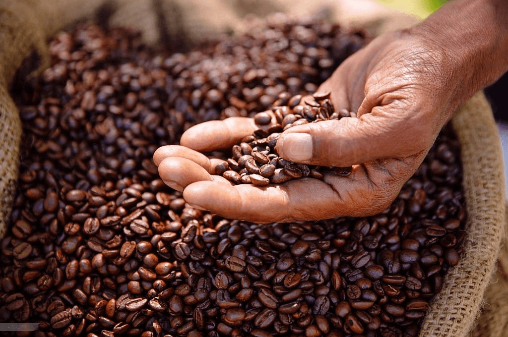

Cultura, Patrimonio y Gastronomía Nacional
El pensamiento unionista de Francisco Morazán

Francisco Morazán (1792-1842) es el máximo prócer de Honduras y un símbolo del ideal de la unión centroamericana. Nacido en Tegucigalpa, dedicó su vida a defender la libertad, la justicia y la integración de las provincias de Centroamérica en una sola república federal.
Su pensamiento se basaba en la educación, la igualdad ante la ley y la superación de las divisiones locales. Aunque enfrentó grandes obstáculos, su legado sigue vivo en el Feriado Morazánico y en el espíritu de unidad que inspira a las nuevas generaciones.
Otros próceres patrios como José Trinidad Cabañas, Dionisio de Herrera y muchos más también contribuyeron a forjar la identidad nacional que hoy celebramos a través de nuestro patrimonio histórico y cultural.
Las etnias vivas de Honduras
Honduras es un país multiétnico. Reconocemos y valoramos a los pueblos originarios y afrodescendientes que mantienen vivas sus tradiciones, idiomas y formas de vida.
Lencas
Pueblo originario del occidente y centro del país. Destacan por su alfarería, tejidos y ceremonias ancestrales. Viven principalmente en Intibucá, Lempira y La Paz.
Garífunas
Comunidad afrodescendiente de la costa norte. Su cultura (música, danza punta, lengua y gastronomía) es Patrimonio Cultural Inmaterial de la Humanidad por la UNESCO.
Misquitos
Habitan la Mosquitia (departamento de Gracias a Dios). Mantienen una fuerte relación con el río y el mar, y conservan su lengua y organización comunitaria.
Tolupanes (Jicaques)
Uno de los pueblos más antiguos del norte de Honduras. Viven en zonas montañosas de Yoro y Francisco Morazán, con profundas raíces en la naturaleza.
Chortís
Descendientes de los mayas, principalmente en el occidente (Copán y Ocotepeque). Conservan tradiciones agrícolas y conocimientos ancestrales vinculados a la tierra.
Gastronomía típica nacional
La cocina hondureña es el resultado del encuentro de culturas indígenas, españolas, africanas y caribeñas. Aquí te presentamos algunos platos emblemáticos:
Baleadas tradicionales

Tortilla de harina rellena de frijoles refritos, queso y crema. Se pueden agregar huevo, aguacate, carne o chorizo. El desayuno y merienda más popular del país.
Sopa de caracol

Plato típico de la costa norte y de las Islas de la Bahía. Preparado con caracol, leche de coco, yuca, plátano y especias. Sabor intenso y muy característico del Caribe hondureño.
Tikin Xik garífuna

Pescado marinado con achiote y cocinado a la parrilla o envuelto en hoja de plátano. Tradición gastronómica de la comunidad garífuna, especialmente en la costa atlántica.
Atol de elote

Bebida caliente y espesa elaborada con elote tierno, leche, canela y azúcar. Ideal para las tardes frescas de las montañas del interior.
Café de altura con denominación de origen

Honduras produce uno de los mejores cafés de altura del mundo. Regiones como Marcala, Copán y Santa Bárbara son reconocidas internacionalmente por su calidad y sabor.